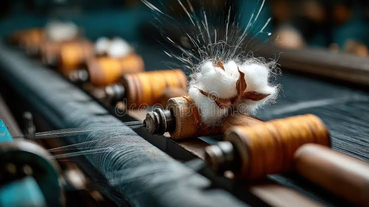
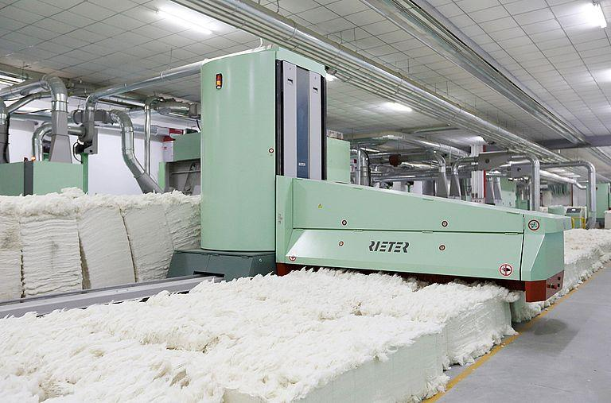
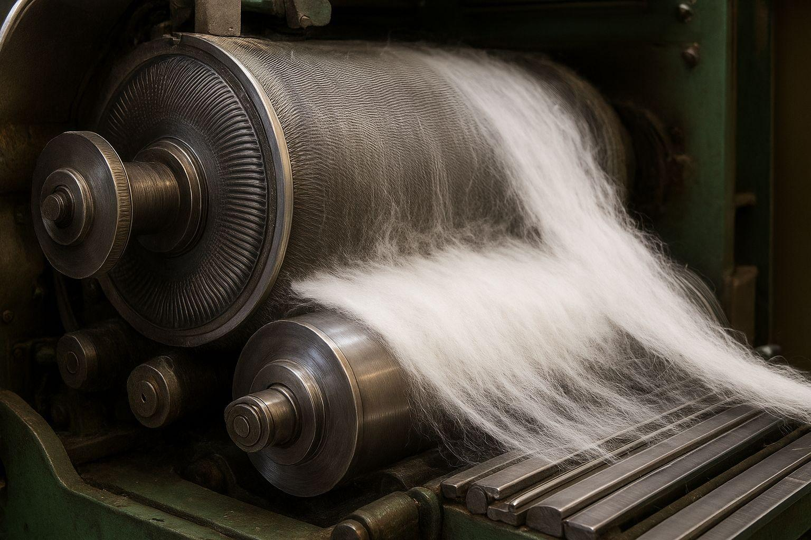
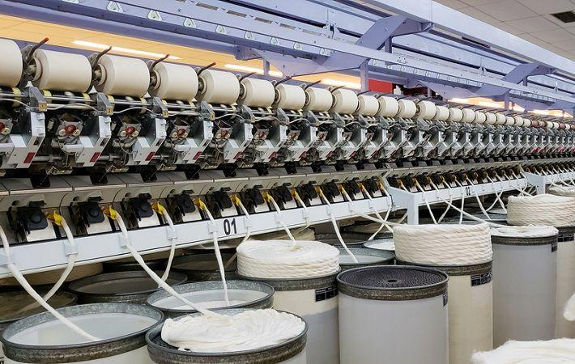

Processing
Turning harvested cotton into yarn

After harvesting and ginning, cotton fibres are transported to processing facilities. Here, the fibres are cleaned, straightened and spun into yarn. This prepares the cotton for fabric production.
⚙️ Key Facts
- Cotton fibres must be cleaned before they can be spun.
- Carding separates and arranges the fibres.
- Spinning twists the fibres together to produce yarn.
- Electricity is used to operate processing machinery.
How Cotton Is Processed
Three main operations prepare cotton fibres for fabric production.

Cleaning
Cotton fibres are cleaned to remove dust, dirt, seeds and other unwanted materials left after harvesting.

Carding
Machines separate and straighten the cotton fibres, arranging them into a continuous, loose strand.

Spinning
The fibres are drawn out and twisted together to create stronger, continuous cotton yarn.
What Happens Next?
Once the cotton fibres have been spun into yarn, the yarn is ready to be turned into fabric. This happens during the manufacturing stage.
Continue to Manufacturing →